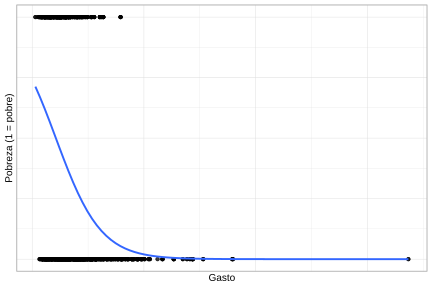
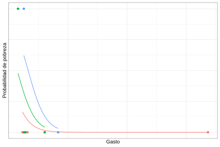
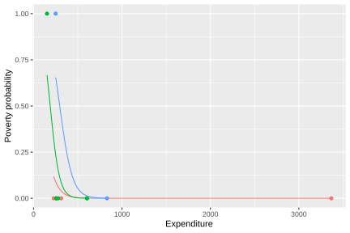

7.4 Modelo logístico multinivel
Los modelos logísticos multinivel constituyen una extensión de los modelos multinivel para variables continuas al caso en que la variable respuesta es dicotómica. En lugar de modelar directamente el valor esperado de una variable continua, estos modelos estiman la probabilidad de ocurrencia de un evento, incorporando simultáneamente covariables individuales y efectos aleatorios asociados a los grupos de pertenencia. En el contexto de encuestas de hogares, esta formulación es especialmente útil cuando se analizan resultados binarios, como encontrarse o no en condición de pobreza, acceder o no a un servicio, participar o no en el mercado laboral, o presentar determinada característica sociodemográfica.
Al igual que en los modelos multinivel para variables continuas, el punto de partida consiste en reconocer que las unidades de observación no son independientes cuando pertenecen a un mismo estrato, conglomerado o dominio. Sin embargo, en el caso logístico la respuesta no se representa mediante una distribución normal con un error residual aditivo, sino mediante una distribución Bernoulli condicional a la probabilidad de ocurrencia del evento. Esta probabilidad se vincula con los predictores a través de la función logit, lo que permite expresar el modelo en una escala lineal.
\[ y_{kj} \mid \pi_{kj} \sim \text{Bernoulli}(\pi_{kj}) \]
donde \(y_{kj}\) toma el valor uno si la unidad \(k\) del estrato \(j\) presenta el evento de interés y cero en caso contrario. La probabilidad condicional del evento se denota por \(\pi_{kj}=Pr(y_{kj}=1)\) y se relaciona con el predictor lineal mediante
\[ \text{logit}(\pi_{kj}) = \log\left(\frac{\pi_{kj}}{1-\pi_{kj}}\right) = \eta_{kj} \]
En esta formulación, \(\eta_{kj}\) cumple un papel análogo al valor esperado lineal de los modelos para variables continuas. La diferencia central es que los efectos fijos y aleatorios actúan sobre la escala logit y no directamente sobre la probabilidad. Por tanto, las diferencias entre estratos se interpretan como desplazamientos en los log-odds del evento, los cuales luego se transforman a probabilidades mediante la función logística. La Figura 7.7 presenta la relación entre gasto y probabilidad de pobreza, con una curva logística ajustada.
ggplot(data = survey_data, aes(y = poverty, x = Expenditure)) +
geom_point(alpha = 0.5) +
geom_smooth(formula = y ~ x, method = "glm", se = FALSE,
method.args = list(family = binomial(link = "logit"))) +
labs(y = "Poverty (1 = poor)", x = "Expenditure")
Figura 7.7: Relación entre gasto y condición de pobreza con curva logística ajustada
La curva ajustada resume la asociación marginal entre el gasto y la condición de pobreza, sin incorporar todavía la estructura jerárquica de los estratos. En términos generales, la forma descendente de la curva indica que, a medida que aumenta el gasto del hogar, disminuye la probabilidad estimada de encontrarse en condición de pobreza. Sin embargo, esta relación promedio puede ocultar diferencias relevantes entre estratos, especialmente cuando los hogares pertenecen a contextos socioeconómicos distintos.
7.4.1 Modelo nulo logístico
Como en el caso de variables continuas, el modelo nulo logístico constituye el punto de partida para estudiar la estructura jerárquica de la variable respuesta. Este modelo no incorpora covariables y permite evaluar si la probabilidad promedio del evento varía entre estratos. En el ejemplo considerado, el evento de interés corresponde a la condición de pobreza, de modo que el modelo permite separar la heterogeneidad atribuible a diferencias entre estratos de la variación individual propia de una respuesta binaria.
El modelo nulo, la variable de interés sigue la siguiente distribución Bernoulli:
\[ y_{kj} \mid \pi_{kj} \sim \text{Bernoulli}(\pi_{kj}) \]
En donde la probabilidad de éxito para la unidad \(k\) perteneciente al grupo \(j\) se modela mediante
\[ \text{logit}(\pi_{kj}) = \beta_{0j}, \]
donde \(\beta_{0j}\) representa el intercepto específico del estrato \(j\) en escala logit. A su vez, dicho intercepto se descompone como
\[ \beta_{0j} = \gamma_{00} + \tau_{0j} \]
siendo \(\gamma_{00}\) el intercepto promedio global de la población y \(\tau_{0j}\) el efecto aleatorio asociado al estrato \(j\), el cual captura las desviaciones de cada grupo respecto al promedio general. Al igual que en el modelo nulo para variables continuas, este efecto aleatorio permite modelar explícitamente la heterogeneidad entre grupos:
\[ \tau_{0j} \sim N(0,\sigma_{\tau}^{2}) \]
A diferencia del modelo lineal multinivel, aquí no se incorpora un término residual aditivo \(\epsilon_{kj}\) en la ecuación del nivel individual. La variabilidad interna en el grupo está determinada por la distribución Bernoulli de la respuesta. Para cuantificar la dependencia entre unidades pertenecientes al mismo estrato se suele utilizar el enfoque de variable latente, bajo el cual esta varianza residual se aproxima por la varianza de la distribución logística estándar, es decir, \(\pi^2/3\) (Snijders & Bosker, 2011). Así, la correlación intraclase del modelo logístico se expresa como
\[ \rho = \frac{\sigma_\tau^2} {\sigma_\tau^2 + \frac{\pi^2}{3}} \]
Un valor elevado de \(\rho\) indica que la probabilidad del evento presenta una estructura de agrupamiento importante, es decir, que dos unidades pertenecientes al mismo estrato tienden a parecerse más entre sí que dos unidades tomadas de estratos distintos. En contraste, un valor bajo sugiere que la mayor parte de la variación se concentra a nivel individual. El ajuste en R se realiza de la siguiente manera:
logistic_null_model <- glmer(poverty ~ (1 | Stratum),
data = survey_data,
weights = qk,
family = binomial(link = "logit"))Los coeficientes del modelo nulo logístico por estrato se presentan en la Tabla 7.5. Los interceptos estimados en el modelo nulo muestran una heterogeneidad considerable entre estratos. En los primeros estratos reportados, algunos interceptos son fuertemente negativos, como idStrt004 e idStrt003, lo que corresponde a probabilidades base muy bajas de pobreza. En contraste, estratos como idStrt009 e idStrt006 presentan interceptos positivos y elevados, asociados con probabilidades base mucho mayores.
| (Intercept) | |
|---|---|
| idStrt001 | -0.852 |
| idStrt002 | -0.038 |
| idStrt003 | -2.378 |
| idStrt004 | -2.618 |
| idStrt005 | -1.037 |
| idStrt006 | 0.902 |
| idStrt007 | -1.018 |
| idStrt008 | 0.156 |
| idStrt009 | 1.913 |
| idStrt010 | -0.609 |
| idStrt011 | -1.275 |
| idStrt012 | 0.203 |
La correlación intraclase asciende a 0.315. Dado que el modelo no incluye covariables, estas diferencias reflejan exclusivamente la variación entre estratos en la prevalencia del evento.
## # Intraclass Correlation Coefficient
##
## Adjusted ICC: 0.315
## Unadjusted ICC: 0.3157.4.2 Modelo logístico con intercepto aleatorio
El modelo logístico con intercepto aleatorio incorpora covariables individuales o del hogar, permitiendo que el nivel base del evento varíe entre estratos. Su lógica es paralela a la del modelo con intercepto aleatorio para variables continuas: los efectos de las covariables se consideran comunes a todos los grupos, mientras que cada estrato puede tener su propio intercepto. En este caso, las diferencias entre interceptos se interpretan como diferencias en los log-odds base del evento.
El modelo se expresa como \(y_{kj} \mid \pi_{kj} \sim \text{Bernoulli}(\pi_{kj})\). En donde \(\text{logit}(\pi_{kj}) = \beta_{0j} + \mathbf{x}_{kj}\boldsymbol{\beta}\) y \(\beta_{0j} = \gamma_{00} + \tau_{0j}\). En este caso, \(\mathbf{x}_{kj}\) representa el vector de covariables de la unidad \(k\) en el estrato \(j\), \(\boldsymbol{\beta}\) es el vector de efectos fijos comunes a todos los estratos y \(\tau_{0j}\) captura la desviación específica del estrato respecto al intercepto promedio global. Como antes, se asume que \(\tau_{0j} \sim N(0,\sigma_{\tau}^{2})\).
Bajo esta especificación, dos estratos con los mismos valores de las covariables pueden presentar probabilidades base distintas del evento debido a sus interceptos aleatorios. Sin embargo, el efecto de cada covariable sobre la escala logit se mantiene constante entre estratos. En el ejemplo, esto equivale a permitir que la probabilidad base de pobreza cambie entre estratos, mientras que la asociación entre gasto y pobreza se resume mediante una pendiente común.
random_intercept_logit_model <- glmer(
poverty ~ Expenditure + (1 | Stratum),
data = survey_data,
family = binomial(link = "logit"),
weights = qk
)
performance::icc(random_intercept_logit_model)## # Intraclass Correlation Coefficient
##
## Adjusted ICC: 0.298
## Unadjusted ICC: 0.171Los coeficientes estimados por estrato se recogen en la Tabla 7.6. Al incorporar el gasto del hogar como covariable, el coeficiente fijo asociado a Expenditure es negativo, lo que indica que mayores niveles de gasto se asocian con menores log-odds de pobreza. Esto implica una reducción progresiva de la probabilidad estimada de pobreza a medida que aumenta el gasto, manteniendo constante el efecto del estrato. En este modelo, el efecto del gasto es común, pero cada estrato tiene un nivel base propio de pobreza. Así, los estratos con interceptos positivos elevados presentan una mayor probabilidad base de pobreza para un mismo nivel de gasto, mientras que los estratos con interceptos negativos muestran una probabilidad base menor.
Aun después de controlar por el gasto, la correlación intraclase ajustada permanece alta, alrededor de 0.298, lo que muestra que las diferencias entre estratos continúan siendo relevantes.
| (Intercept) | Expenditure | |
|---|---|---|
| idStrt001 | 1.044 | -0.007 |
| idStrt002 | 1.918 | -0.007 |
| idStrt003 | -0.454 | -0.007 |
| idStrt004 | 0.062 | -0.007 |
| idStrt005 | 1.760 | -0.007 |
| idStrt006 | 3.194 | -0.007 |
| idStrt007 | 0.658 | -0.007 |
| idStrt008 | 1.711 | -0.007 |
| idStrt009 | 3.721 | -0.007 |
| idStrt010 | 1.175 | -0.007 |
La Figura 7.8 presenta las curvas de probabilidad predichas mediante un modelo logístico con intercepto aleatorio por estrato. Se observa una relación inversa entre el gasto y la probabilidad de pobreza, de modo que hogares con mayores niveles de gasto presentan una menor probabilidad de ser clasificados como pobres. Asimismo, las diferencias entre las curvas reflejan la heterogeneidad existente entre estratos, capturada mediante los interceptos aleatorios del modelo.
prediction_data <- plot_data %>%
group_by(Stratum) %>%
summarise(Expenditure = list(seq(min(Expenditure), max(Expenditure), len = 100))) %>%
tidyr::unnest_legacy()
prediction_data <- mutate(prediction_data,
probability = predict(random_intercept_logit_model,
newdata = prediction_data,
type = "response"))ggplot(data = prediction_data,
aes(y = probability, x = Expenditure, colour = Stratum)) +
geom_line() +
geom_point(data = plot_data, aes(y = poverty, x = Expenditure)) +
labs(y = "Poverty probability", x = "Expenditure") +
theme(legend.position = "none")
Figura 7.8: Curvas de probabilidad predichas por estrato: modelo logístico con intercepto aleatorio
7.4.3 Modelo logístico con intercepto y pendiente aleatoria
El modelo logístico con intercepto y pendiente aleatoria extiende la especificación anterior permitiendo que no sólo varíe el nivel base del evento entre estratos, sino también el efecto de una covariable específica. Esta formulación es análoga al modelo de intercepto y pendiente aleatorios para variables continuas, con la salvedad de que las diferencias entre estratos se expresan en la escala logit y se traducen en curvas de probabilidad no lineales.
Sea \(x_{kj}\) la covariable cuyo efecto se permite variar entre estratos, y sea \(\mathbf{z}_{kj}\) el conjunto de covariables con efectos fijos comunes. En este modelo, al probabilidad de éxito se asume de tal forma que \(\text{logit}(\pi_{kj}) = \beta_{0j} + x_{kj}\beta_{1j} + \mathbf{z}_{kj}\boldsymbol{\beta}\). En donde, \(\beta_{0j}\) es el intercepto específico del estrato \(j\) y \(\beta_{1j}\) es la pendiente específica asociada a la covariable \(x_{kj}\).
Ambos parámetros se descomponen en una parte promedio poblacional y una desviación específica del estrato, de tal manera que \(\beta_{0j} = \gamma_{00} + \tau_{0j}\) y \(\beta_{1j} = \gamma_{10} + \tau_{1j}\). En donde los términos \(\gamma_{00}\) y \(\gamma_{10}\) representan, respectivamente, el intercepto promedio global y la pendiente promedio global en escala logit. Por su parte, \(\tau_{0j}\) y \(\tau_{1j}\) capturan cuánto se aparta el estrato \(j\) de esos promedios. La implementación en R es la siguiente:
random_slope_logit_model <- glmer(
poverty ~ 1 + Expenditure + (1 + Expenditure | Stratum),
data = survey_data,
weights = qk,
family = binomial(link = "logit")
)
performance::icc(random_slope_logit_model)## # Intraclass Correlation Coefficient
##
## Adjusted ICC: 0.875
## Unadjusted ICC: 0.631La estimación del modelo con intercepto y pendiente aleatoria indica una heterogeneidad mucho más marcada entre estratos. En este caso, tanto los interceptos como las pendientes asociadas al gasto pueden cambiar entre grupos. La correlación intraclase ajustada es muy alta, lo que sugiere que el componente entre estratos domina la variación latente del modelo. Los coeficientes del modelo por estrato se muestran en la Tabla 7.7.
| (Intercept) | Expenditure | |
|---|---|---|
| idStrt001 | 4.865 | -0.025 |
| idStrt002 | 9.862 | -0.035 |
| idStrt003 | -1.133 | -0.007 |
| idStrt004 | 1.899 | -0.015 |
| idStrt005 | 8.030 | -0.026 |
| idStrt006 | -1.153 | 0.009 |
| idStrt007 | 0.974 | -0.012 |
| idStrt008 | 1.488 | -0.006 |
| idStrt009 | 3.660 | -0.005 |
| idStrt010 | 4.133 | -0.020 |
Los coeficientes por estrato evidencian que la relación entre gasto y pobreza no sólo cambia en el nivel base, sino también en la intensidad y dirección de la pendiente. En varios estratos la pendiente del gasto es negativa, lo que mantiene la interpretación esperada de que mayores niveles de gasto reducen la probabilidad de pobreza. Sin embargo, también aparecen pendientes cercanas a cero e incluso positivas en algunos estratos, lo que sugiere patrones locales distintos. Esta variabilidad es precisamente la que el modelo busca capturar mediante el efecto aleatorio de la pendiente. La Figura 7.9 muestra que las curvas predichas son más heterogéneas entre estratos que en el modelo anterior:
prediction_data <- plot_data %>%
group_by(Stratum) %>%
summarise(Expenditure = list(seq(min(Expenditure), max(Expenditure), len = 100))) %>%
tidyr::unnest_legacy()
prediction_data <- mutate(prediction_data,
probability = predict(random_slope_logit_model,
newdata = prediction_data,
type = "response"))ggplot(data = prediction_data,
aes(y = probability, x = Expenditure, colour = Stratum)) +
geom_line() +
geom_point(data = plot_data, aes(y = poverty, x = Expenditure)) +
labs(y = "Poverty probability", x = "Expenditure") +
theme(legend.position = "none")
Figura 7.9: Curvas de probabilidad predichas por estrato: modelo logístico con intercepto y pendiente aleatoria